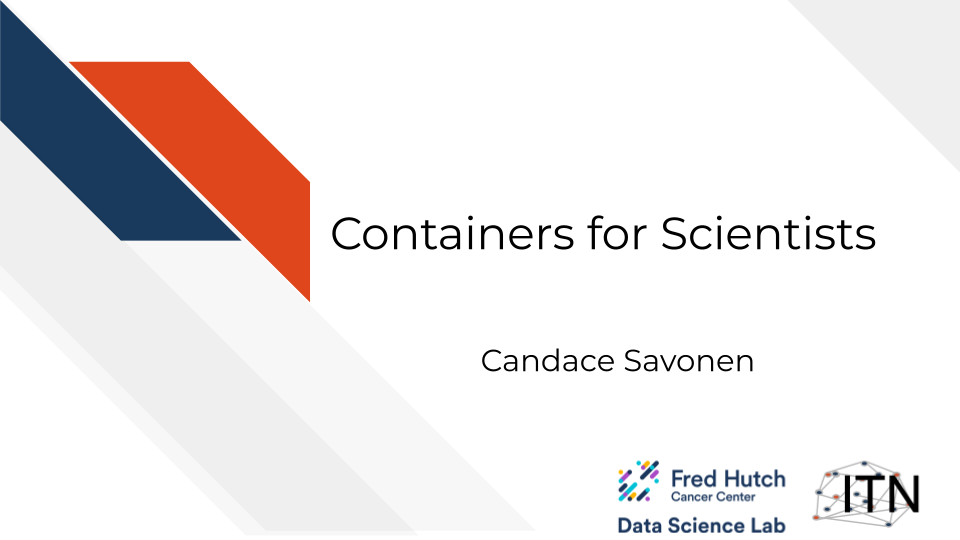
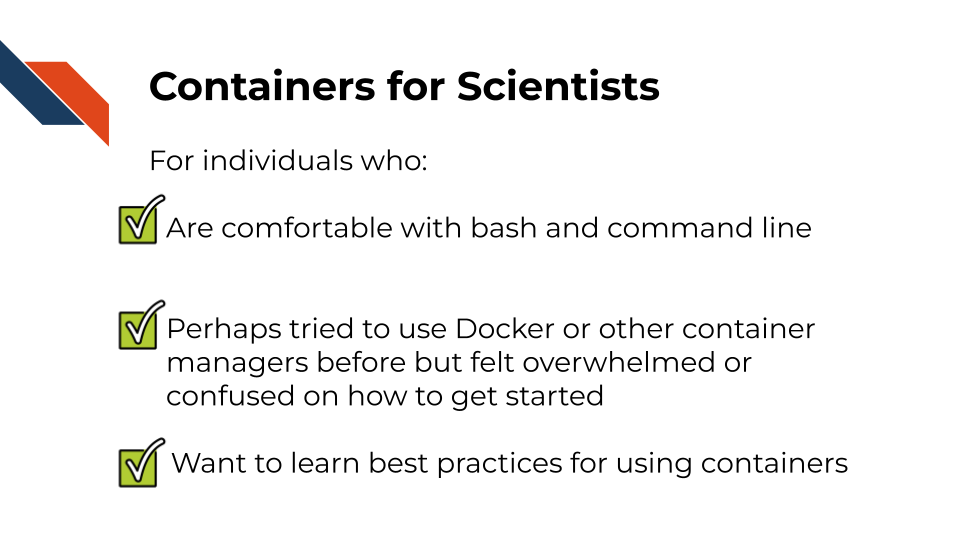
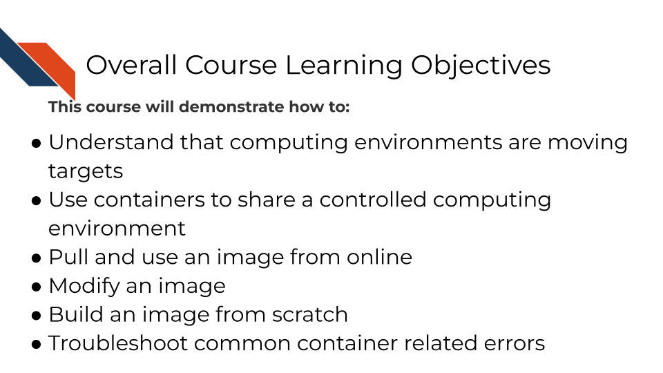
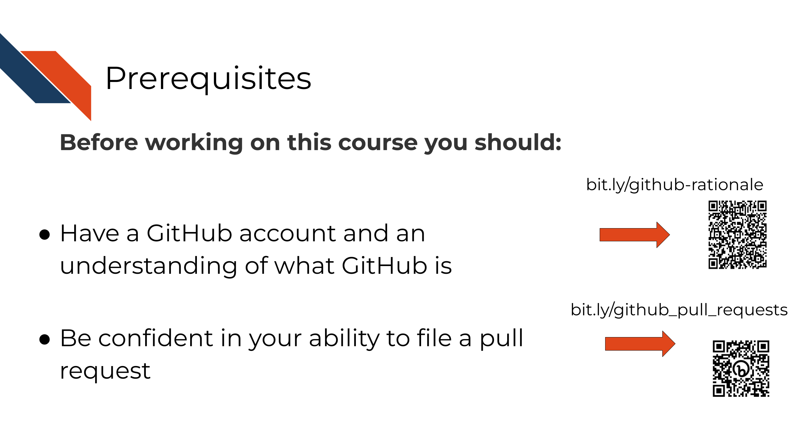
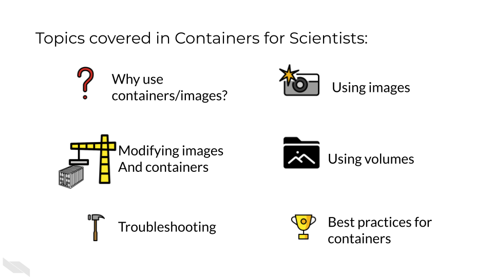

1 Introduction
1.1 Target Audience
The course is intended for students in the biomedical sciences and researchers who use informatics tools in their research.
This course is written for individuals who:
- Are comfortable with bash and command line
- Write code for scientific projects
- Perhaps tried to use Docker or another containerization software before but felt overwhelmed or confused on how to get started
- Want to learn best practices for using containers

1.2 Topics covered
This course covers how to use containers for scientific software development. Scientific software can take many forms but all can benefit from the concepts of continuous integration (CI) and continuous deployment (CD). Containers play a critical role in CI/CD by providing a consistent, portable, and isolated environment for building, testing, and deploying software.

This course builds on concepts introduced in the Reproducibility and Advanced Reproducibility courses from the ITCR Training Network. If you are unfamiliar with GitHub and/or do not have an account, we’d suggest you start with these courses first.

The specific topics covered in this course include the benefits of using containers, using images/containers created by others, modifying images/containers, and using volumes to link to your data to a container, and troubleshooting best practices when working with containers.

1.3 Motivation
Cancer datasets are plentiful, complicated, and hold untold amounts of information regarding cancer biology. Cancer researchers are working to apply their expertise to the analysis of these vast amounts of data but training opportunities to properly equip them in these efforts can be sparse. This includes training in reproducible data analysis methods.
Data analyses are generally not reproducible without direct contact with the original researchers and a substantial amount of time and effort (Beaulieu-Jones and Greene 2017). Reproducibility in cancer informatics (as with other fields) is still not monitored or incentivized despite the fact that it is fundamental to the scientific method. Even without external incentives, many researchers strive for reproducibility in their own work but often lack the skills or training to do so effectively.
Equipping researchers with the skills to create reproducible data analyses increases the efficiency of everyone involved. By recognizing that biological data analysis code is a form of software development, we can try to adapt good development practices in scientific analyses and software contexts.
Scientific software projects may include (but aren’t limited to):
- Software built as tools to be utilized by others to analyze biologically derived data.
- Code that is built primarily for analyzing one project’s data.
- Code that is built as a workflow for a series of steps and analyses that might be reused among collaborators or within a lab.
- Any scripts and code that are built to handle data in a research setting.
- Any scripts and code a researcher might interact with.
One tool among many for creating reproducible analyses is utilizing containers. A container is a lightweight, portable, and isolated environment that encapsulates an application and its dependencies, enabling it to run consistently across different computing environments. Many individuals performing analyses on cancer data may not have formal training in software development and may be unfamiliar with the idea of containers.
1.4 Curriculum
The course includes hands-on exercises for how to use, modify, share, and troubleshoot containers for scientific software development purposes.
Goal of this course: Equip learners with basics skills and confidence to utilize containers within the context of scientific software analyses.
What is not the goal This course is not meant to teach learners how to create complex containers, but instead introduce learners to basic fundamentals of continuous integration and continuous deployment. This course focuses on containers (Docker or Podman) and will not cover any other (perfectly fine) tools for CI/CD.
1.5 How to use the course
Ideally you should follow along with the chapters and perform the activities as they are described. These activities involve using Docker or optionally Podman.
We also recommend that if you’d like to fully leverage your container skills after taking this course you may also enjoy our GitHub Actions course that pairs well with the skillset taught here.
Beaulieu-Jones, Brett K, and Casey S Greene. 2017. “Reproducibility of Computational Workflows Is Automated Using Continuous Analysis.” Nature Biotechnology 35 (4): 342–46. https://doi.org/10.1038/nbt.3780.